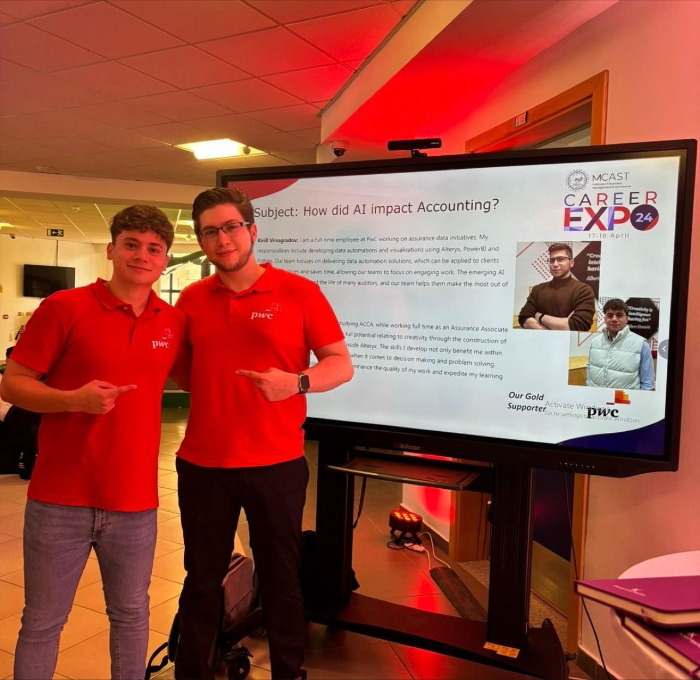
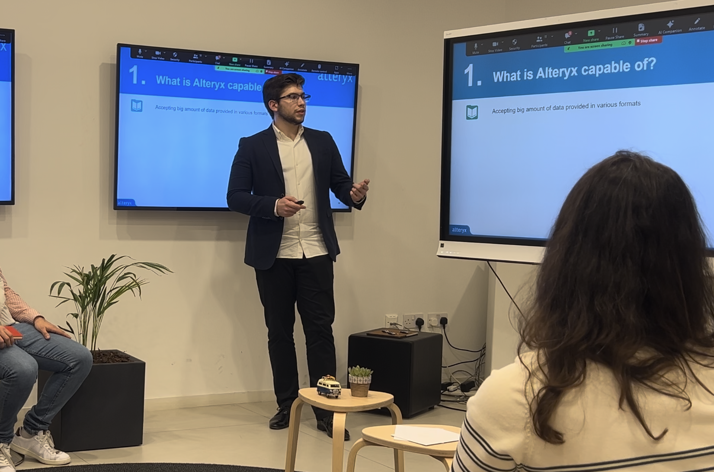

Über Mich
Vielen Dank für Ihr Interesse an meinem Profil!
Mein Name ist Kirill Vinogradov, und ich entdeckte meine Leidenschaft für Daten schon in jungen Jahren während meines Studiums an der Universität. Mir wurde bewusst, dass wir in jedem Lebensbereich auf Daten stoßen und dass diejenigen, die sie verstehen und interpretieren können, Großes erreichen können.
Abschlussrede an der Universität Malta.
Ich strebe stets nach Verbesserung und konzentriere mich dabei auf Produktivität, persönliches Wachstum und Effizienz. Meine Datenkenntnisse wandte ich zunächst in meinem Privatleben an, indem ich Bots, Frameworks und Visualisierungen erstellte, um meine Lebensqualität zu verbessern. Nachdem ich meine Fähigkeiten verfeinert hatte, trat ich PwC Malta bei. Dort eignete ich mir fundierte Kenntnisse in Data Engineering mit Alteryx, Data Science mit Python, Datenvisualisierung mit Power BI und RPA mit UiPath an. Ich erstellte und betreute fast hundert Automatisierungen für Kunden aus verschiedenen Branchen, wodurch Tausende von Stunden manueller Arbeit eingespart und die Arbeitsqualität erheblich verbessert wurden.
Bei PwC Malta ging meine Rolle über die reine Entwicklung hinaus. Ich wirkte an zahlreichen Präsentationen mit, sowohl kundenorientiert als auch intern, und stellte sicher, dass die Inhalte gründlich erklärt und Erwartungen sowie Pläne klar kommuniziert wurden. Ich bin mir der Bedeutung der Stakeholder-Kommunikation bewusst und arbeite kontinuierlich daran, meine Kommunikationsfähigkeiten für maximale Effektivität zu verbessern.
Zusätzlich hatte ich das Vergnügen, als Teamleiter ein technisches Team von vier Personen zu führen. Während dieser Zeit ermöglichte ich neue Projekte, kommunizierte mit Kunden, verteilte Arbeitslasten und unterstützte Teammitglieder dabei, in ihre gewünschten Rollen hineinzuwachsen. Diese Erfahrung vertiefte mein Verständnis für effektives Projektmanagement und die Bedeutung starker Führung.
Präsentation über die Auswirkungen von KI auf das Rechnungswesen.
Der nächste Schritt führte mich zu Tipico, der Nummer eins Sportwettenmarke in Deutschland, wo ich als Insight Analyst tätig bin. Ich erstelle SQL-Abfragen, um Daten aus dem Warehouse zu extrahieren, baue anschließend Tableau-Dashboards für Visualisierungen und übernehme dann das Monitoring und die Analyse der Daten.
Die Herausforderungen bei Tipico stellen meine Fähigkeiten in Data Engineering, Analyse und Visualisierung auf die Probe und erfordern stets Präzision sowie ein umfassendes Verständnis der zugrunde liegenden Prozesse. Ich freue mich stets auf Aufgaben, die Expertise in mehreren Bereichen erfordern und dabei helfen, nützliche Erkenntnisse abzuleiten.
Vortrag bei Maltas erster Alteryx User Group.
Wenn Sie mehr über meine berufliche Erfahrung erfahren möchten, lade ich Sie herzlich ein, mein Portfolio zu besuchen.